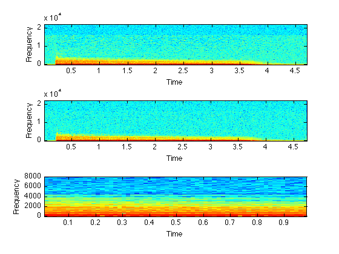

audioread - unified Matlab audio file input function
audioread provides a single, unified Matlab function for reading audio files in a range of different file formats, including wav, mp3, aac, flac, AIFF, etc. In most cases, access is actually provided by external binaries, but this is hidden within audioread (and its subfunctions). The idea is to make your code independent of the kind of audio files used as input.
In addition, audioread provides support for common modifications performed during sound input, namely resampling (changing the sampling rate), casting multi-channel signals to mono, and loading only a limited time range of the sound. Care has been taken to ensure that short subregions of very large soundfiles can be read with the minimum of memory overhead (for instance, without having to load in the entire soundfile at any time).
Contents
Example usage
In its simplest form, audioread will load a soundfile into a vector in memory, just like wavread. However, the same function will also read an mp3 file, or an aac file, or any other supported soundfile type:
% Read an audio waveform [d,sr] = audioread('piano.wav'); % Plot the spectrogram subplot(311) specgram(d(:,1),1024,sr); % Read in a different format [d2,sr] = audioread('piano.mp3'); subplot(312) specgram(d2(:,1),1024,sr); % Read with resampling, casting to mono, and time limits forcemono = 1; starttime = 0.5; % seconds duration = 1.0; targetsr = 16000; [d3,sr] = audioread('piano.aac',targetsr,forcemono,starttime,duration); subplot(313) specgram(d3,512,sr);
Writing audio files
This package also includes audiowrite, a function to write out soundfiles in different formats, where the format is guessed from the provided filename extension. This is only a quick attempt, however, since there is no provision for controlling the encoding performed by lossy formats (mp3 etc.).
External binaries
audioread relies on external binaries for access to mp3, aac/m4a, and flac files. This mechanism works well on Linux and MacOS, but may require some fixes to make work on Windows.
For aac access, it requires faad. See http://www.audiocoding.com/
For mp3 access, it requires mp3info and mpg123. See http://www.mpg123.de/ and http://www.ibiblio.org/mp3info/
For flac access, it requires flac and metaflac. See http://flac.sourceforge.net/
Installation
You can download a zip file containing audioread.m and the other files used in this demo from audioread.zip.
By default, the latest version of audioread looks for binaries such as mpg123, faad, etc., using the "which" function provided by the shell. If you do not have these tools installed centrally, you can put them in the same directory as the Matlab scripts. You may need to edit the corresponding Matlab file (mp3read.m, m4aread.m, etc.) to make sure they are found.
Temporary files will be written to (a) a directory taken from the environment variable TMPDIR (b) /tmp if it exists, or (c) the current directory. This can easily be changed by editing the .m files.
% Last updated: $Date: 2012/04/26 18:42:09 $ % Dan Ellis <dpwe@ee.columbia.edu>